Class 11 Lecture Demonstration Lab
Spring 2023 | NINT5380 CRN2115
Basemap Development with Mapbox & ArcGIS Online
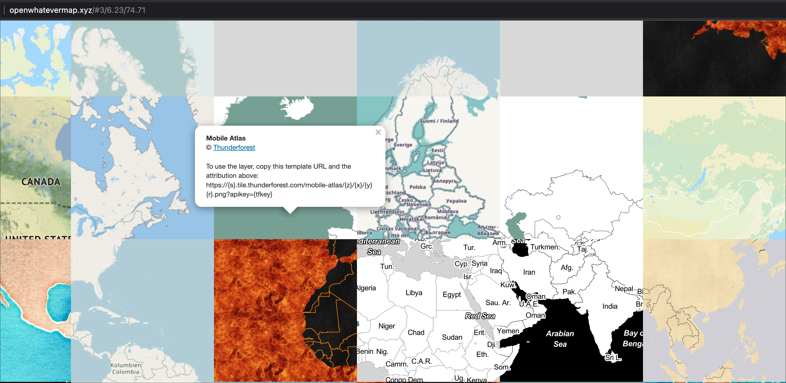
Part I
Basemap Development - Parameters
For interactive web mapping, the basemap typically operates as the ‘base’ layer that provides contextual information to the end user. Basemap layers are typically a Server-side application that is responsive to Client-side actions:
Basemaps serve as a reference map on which you overlay data from layers and visualize geographic information. An individual basemap can be made of multiple feature, raster, or web layers. Basemaps are the foundation for your [interactive, online] maps and provide context for your work.
A basemap service - often referred to as a tiled service - contains cached tiles that render the map in small tile images. This allows the map to perform much faster when panning and zooming. Most contemporary basemap services follow a typical web address structure.
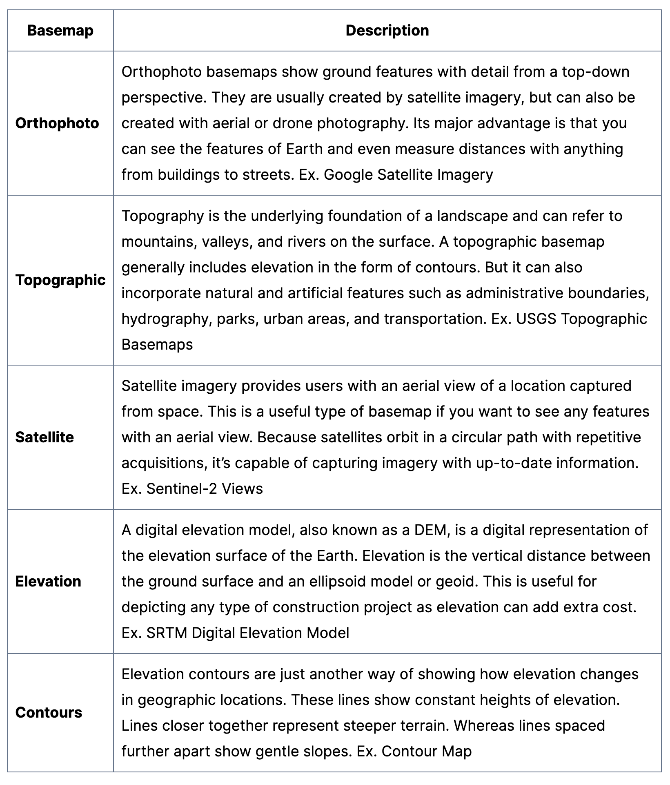
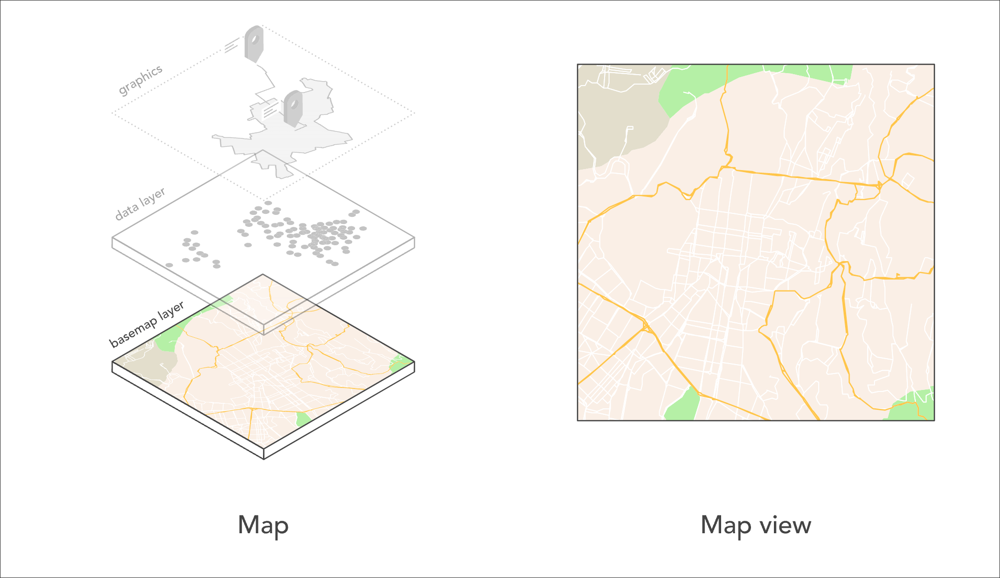
To start, navigate to openwhatevermap.xyz/ and take a look at a collection of out-of-the-box basemap options. Click on some of the gridded basemap options and notice the tile address structure:
https://stamen-tiles-{s}.a.ssl.fastly.net/toner-lite/{z}/{x}/{y}{r}.png- The first part of the web address specifies the origination of the tile service. The second
{z}/{x}/{y}{r}structure allows for zoom and positioning provided by the user through the browser. The final.pngrefers to the image type for the tile service.
Tile Services typically fall into one of two categories:
Raster map tiles are larger in size, less demanding on end-users’ hardware but more demanding on the server-side performance.
Vector map tiles are faster to load, and less demanding on the server-side performance but more demanding on end-users hardware.
Often there is also a required API Access Token attached to both raster and vector tile services that have been customized by a particular user within the user’s account be it ArcGIS Online or Mapbox.
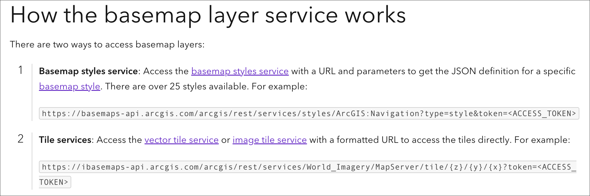
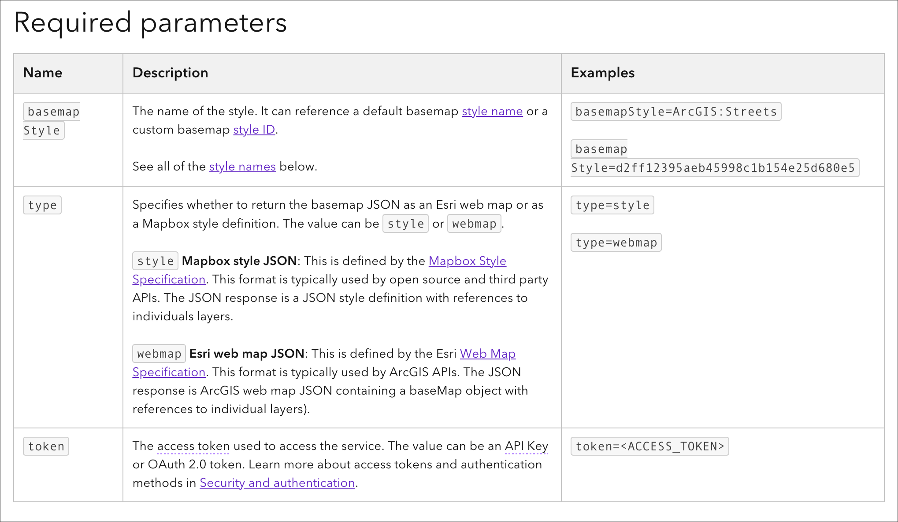
Part II
Basemap in ArcGIS Desktop
In ArcGIS Desktop, if we add a basemap to a .mxd project, we can see the tile service address:
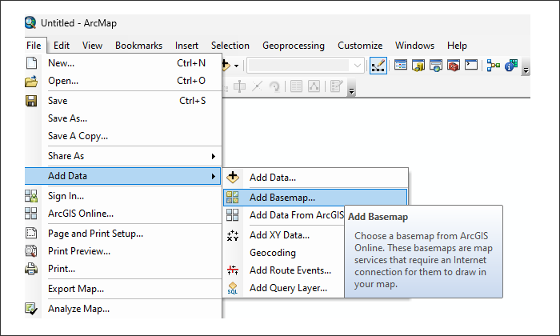
Behind the scenes, the basemap address is as follows:
https://services.arcgisonline.com/arcgis/rest/services/Canvas/World_Dark_Gray_Base/MapServerIf we go to the address, we can see the metadata for this standard basemap for ArcGIS, and view the zoom levels and Tile info available for this basemap:
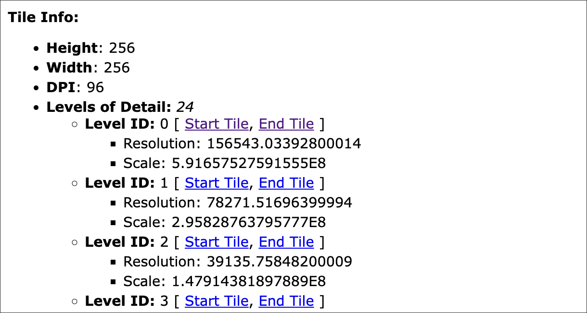
Part III
ArcGIS Online
For this week’s assignment, you will need a login account for both Mapbox Studio and ArcGIS Online.
To start, navigate to the 21 day free trial option:
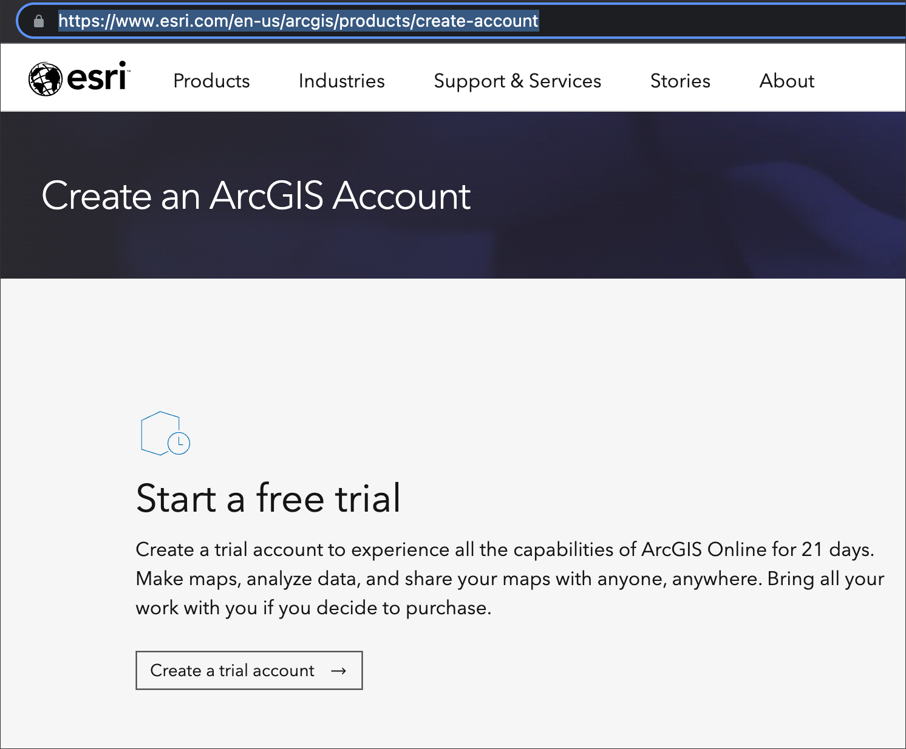
You will want to enact the ArcGIS Online trial for professionals:
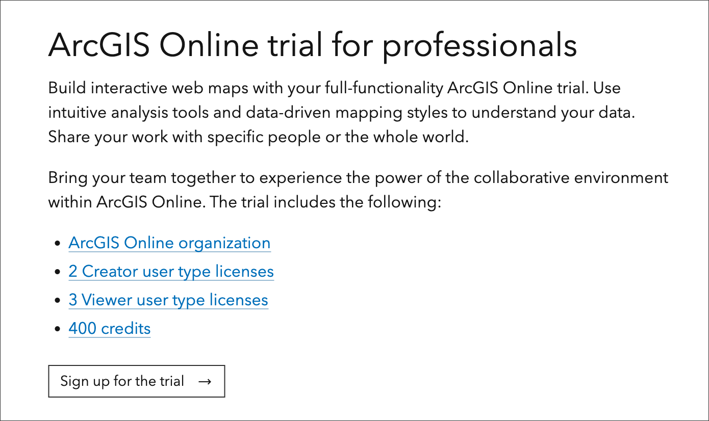
You will need to utilize an email address that is NOT an .edu or gmail.com account:
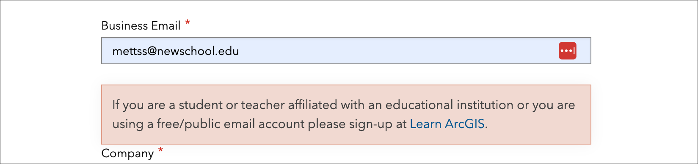
If you enter a .edu or gmail.com account, you will receive the warning above, which will then point you to a degraded account option which you do not want for this week’s assignment.
While ArcGIS Online has its own basemap collection and also basemap editor, Mapbox Studio is arguably the ‘go to’ basemap development service. With Mapbox Studio you have available on the free tier some impressive capabilities. In this lab, we will utilize Mapbox Studio on the free tier.
Before proceeding to Mapbox Studio, take a quick look at ArcGIS Online Vector Tile Style Editor:
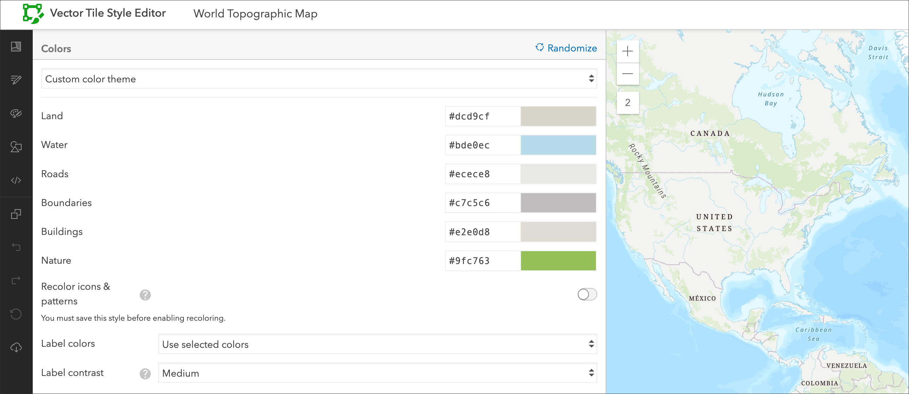
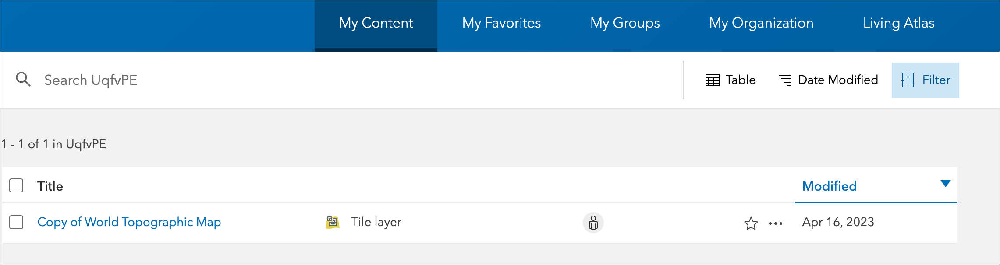
IF you choose to work with basemaps in ArcGIS online, a starter tutorial is located HERE
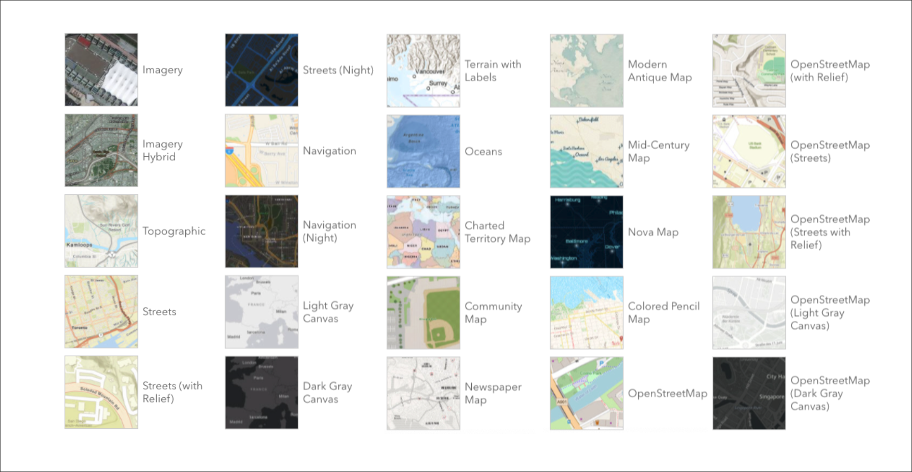
Part IV:
Mapbox Studio
In order to use Mapbox Studio, you will need at least a free tier starter account. Utilize the unique email address that is NOT .edu or .gmail.com as noted in Part III above. We will use this unique email address for both Mapbox Studio and ArcGIS Online for this upcoming week’s assignment and lab sessions:
Access Mapbox Signup HERE
Next, navigate to Mapbox Studio once your account is created and login is complete:
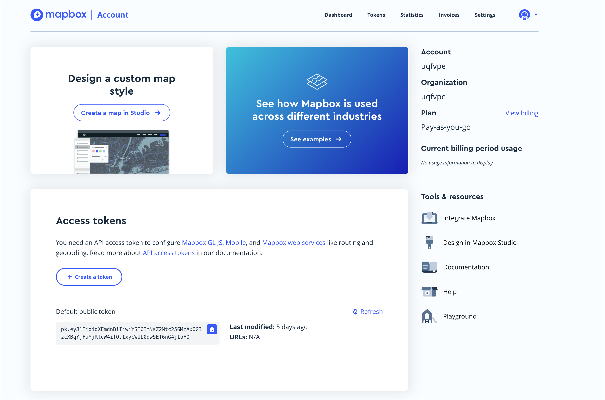

Before we begin, remember the cartographic design principles we learned in Class 3 Cartographic Design. Particularly relevant for basemaps are the following four components on which good cartographic design rests:
- Scale
- Hierarchy
- Color
- Symbology
Within Mapbox, note that Tilesets are distinguished from Datasets. Via Datasets we can either load into Mapbox GIS data from an analysis workflow in desktop GIS; and Mapbox also allows for a development interface for points, lines and polygons as Datasets. Here we will make some data points around NYC within Datasets and save as points test:
Once saved as points test dataset, this vector points feature needs to be converted to a Tileset:
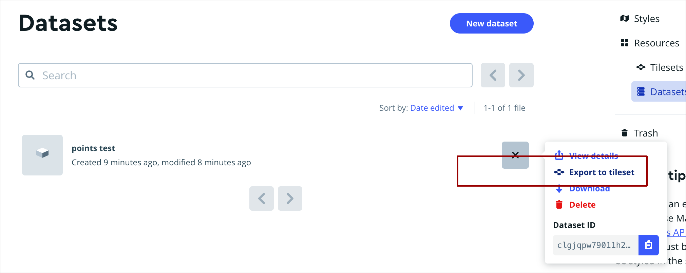
In order to transform a Tileset into an actual Studio Layer, navigate to Studio > Styles > add a New Style:
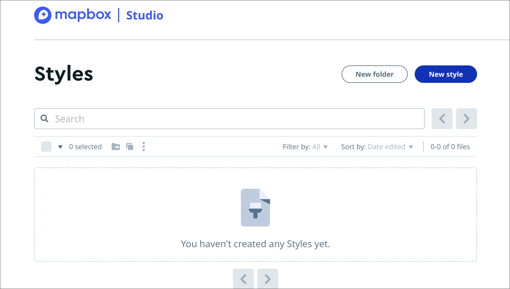
Next, we’ll choose Monochrome, and enter into an editing session for this baselayer:
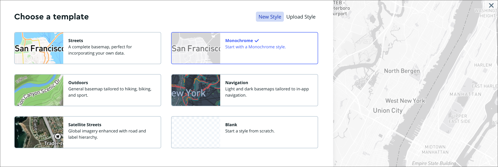
In order to add our points test Tileset to the current map style, navigate Layers > + New Layer > Source > Selected > points_test:
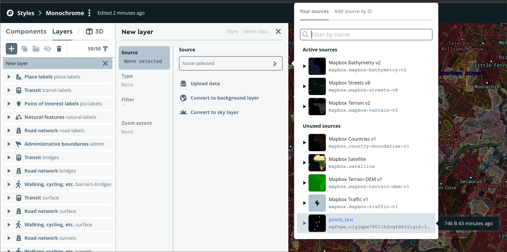
Once placed as a Layer into the Style, proceed to publishing the Style:
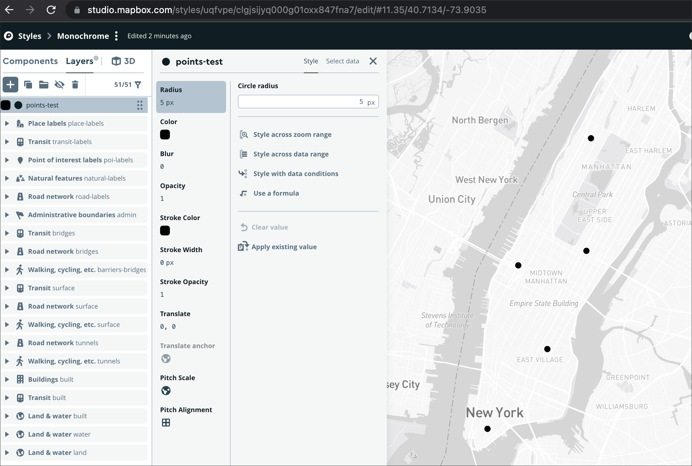
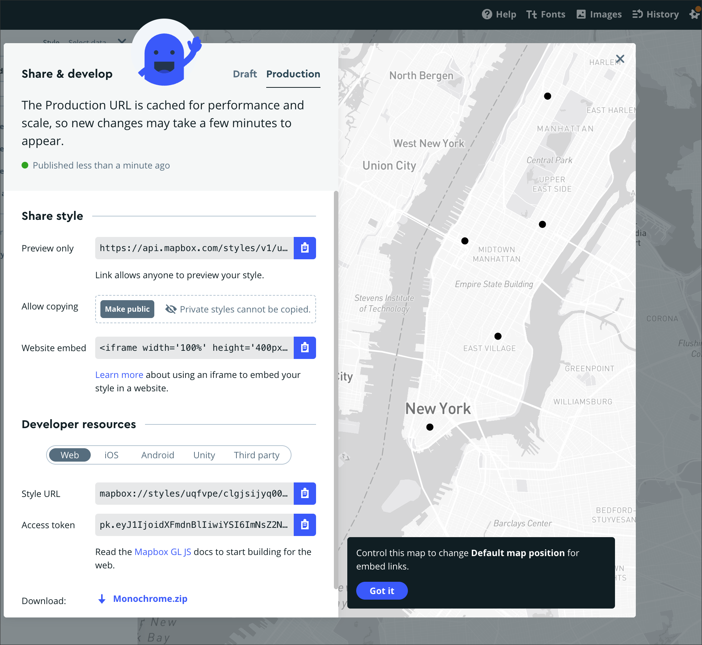
As the Style is published, we will explore uses for the new Mapbox Studio Layer in third party applications or direct sharing options:
Mapbox requires attribution as at least Mapbox © OpenStreetMap; review attribution at: https://docs.mapbox.com/help/getting-started/attribution/